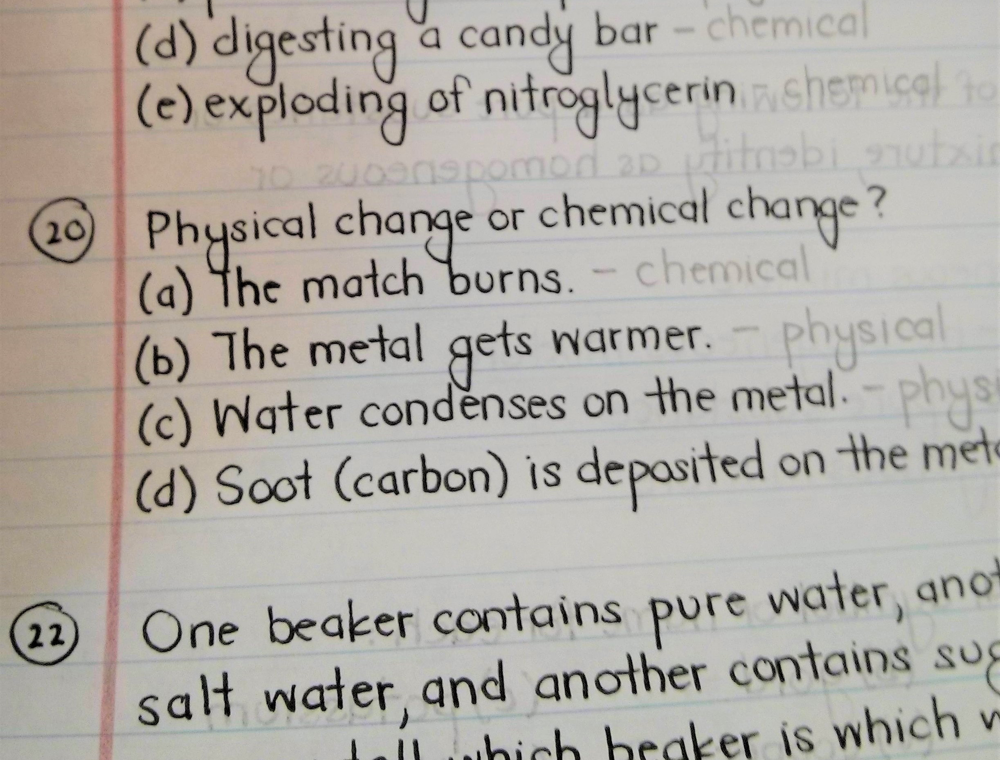
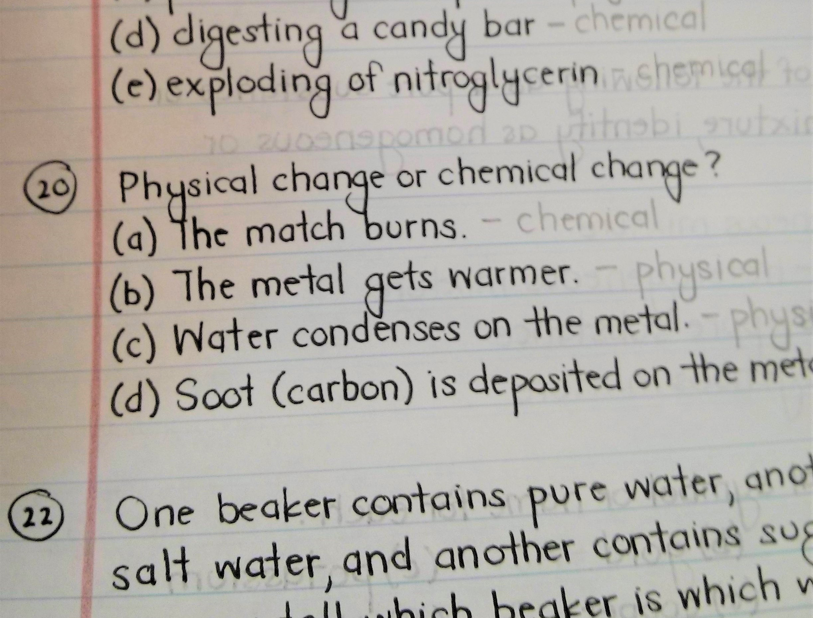
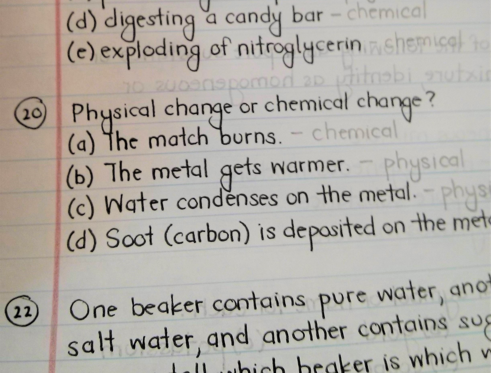

Why Coding Standards Aren't Only For the Anal-Retentive
February 07, 2019
Labels: Coding, Coding Standards, ES Lint
No one likes a mess.
Have you ever tried to make sense of someone else's notes and just been completely lost? Which of these
would you rather
read?
 
I'm guessing you picked the one on the right. When I taught Algebra 2, I was constantly looking over
students notes and
work to help them solve problems. I noticed a significant difference in students who kept their work
neat versus those
who just scribbled numbers here and there on their paper. First of all, when I asked a student to
explain their thinking
process to me, those who had a system for showing their work could easily walk me through, step by step,
which made it
easy for me to point out any errors to them. Those who did NOT solve problems systematically would often
get lost trying
to explain their process to me and would have to start from scratch. It made such a difference that I
started requiring
students to follow certain guidelines when solving equations. You can look at coding in a similar light.
You are going
through a logical series of steps to achieve your end goal. So, it naturally follows that coders would
also benefit from
adhering to some type of standard for "showing their work" as well.

I'm guessing you picked the one on the right. When I taught Algebra 2, I was constantly looking over
students notes and
work to help them solve problems. I noticed a significant difference in students who kept their work
neat versus those
who just scribbled numbers here and there on their paper. First of all, when I asked a student to
explain their thinking
process to me, those who had a system for showing their work could easily walk me through, step by step,
which made it
easy for me to point out any errors to them. Those who did NOT solve problems systematically would often
get lost trying
to explain their process to me and would have to start from scratch. It made such a difference that I
started requiring
students to follow certain guidelines when solving equations. You can look at coding in a similar light.
You are going
through a logical series of steps to achieve your end goal. So, it naturally follows that coders would
also benefit from
adhering to some type of standard for "showing their work" as well.

So get it together
 In my humble opinion, coding standards are a necessary guideline for anyone who wants to code more than
a 20-line
program. The importance of having "neat" code goes far beyond just because it looks nice. Messy code is
basically
equivalent to messy handwriting or completely ignoring the lines on folder paper when you’re writing.
Similarly, trying
to read messy code, whether to debug it, or just to understand it is painful at best. So why not avoid
all that by
adhering to some coding standards? At first you may find it annoying, painful, or excessive. You may ask
yourself,
“**WHY** is it necessary to have so many spaces?!” But overtime, it will become second nature to do
these things and you
will reap the benefits. When you’ve been staring at a screen for 6 hours straight, those *spaces* you
hated so much are
suddenly making it 10 times easier to read your code. Those indentations make it easier to follow your
logic from 2 days
ago and those well-named variables are saving your life because you have no clue what you were thinking
when you typed
that code at 1am the night before. And when, God forbid, you have to ask someone for help, they won’t
disown you when
they go through and try to make sense of your code. All of the sudden, Checkstyle and ESLint go from
pesky
anal-retentive supervisors to welcome contributors with your best interests at heart.
In my humble opinion, coding standards are a necessary guideline for anyone who wants to code more than
a 20-line
program. The importance of having "neat" code goes far beyond just because it looks nice. Messy code is
basically
equivalent to messy handwriting or completely ignoring the lines on folder paper when you’re writing.
Similarly, trying
to read messy code, whether to debug it, or just to understand it is painful at best. So why not avoid
all that by
adhering to some coding standards? At first you may find it annoying, painful, or excessive. You may ask
yourself,
“**WHY** is it necessary to have so many spaces?!” But overtime, it will become second nature to do
these things and you
will reap the benefits. When you’ve been staring at a screen for 6 hours straight, those *spaces* you
hated so much are
suddenly making it 10 times easier to read your code. Those indentations make it easier to follow your
logic from 2 days
ago and those well-named variables are saving your life because you have no clue what you were thinking
when you typed
that code at 1am the night before. And when, God forbid, you have to ask someone for help, they won’t
disown you when
they go through and try to make sense of your code. All of the sudden, Checkstyle and ESLint go from
pesky
anal-retentive supervisors to welcome contributors with your best interests at heart.
Long Story Short
The moral of the story is, if you hate your coding standards right now, ***stick it out.*** It’s worth
it in the end.
For you and any other poor soul who has to read through your code in the future.
\**If you think I feel strongly about this, wait till you hear what I have to say about commenting your code.* üòÑ
\**If you think I feel strongly about this, wait till you hear what I have to say about commenting your code.* üòÑ